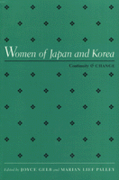

Original research on the changing roles of women in Japan and Korea
Original research on the changing roles of women in Japan and Korea


 Original research on the changing roles of women in Japan and Korea
Original research on the changing roles of women in Japan and Korea

|  |
Women of Japan and KoreaContinuity and Changeedited by Joyce Gelb and Marian Lief Palleypaper EAN: 978-1-56639-224-2 (ISBN: 1-56639-224-1) |
This collection presents new research on the changing roles of women in Japan and Korea. At a time when women in these two countries are becoming more politically and socially prominent, these essays provide insight into the clashes that have arisen between tradition and change. The contributors compare similarities and differences in the two cultures, considering family life, education, health care, work, reproductive and legal rights, and political participation, including the rise of women's movements in Asia and the battle against sexism and gender stereotyping. Essays written by Japanese and Korean women, leading social scientists and practitioners, illuminate the current political, economic, and social status of women in Japan and Korea.
Excerpt available at www.temple.edu/tempress
1. Introduction – Joyce Gelb and Marian Lief Palley
Part I: Japanese Women
2. Women and the Family in Transition in Postindustrial Japan – Chizuko Ueno
3. Women's Education and Gender Roles in Japan – Kumiko Fujimura-Fanselow and Atsuko Kameda
4. Abortion and Women's Reproductive Rights: The State of Japanese Women, 1947-1991 – Miho Ogino
5. Women Workers in Japan: Past, Present, Future – Eiko Shinotsuka
6. Obstacles and Opportunities: Women and Political Participation in Japan – Kimiko Kubo and Joyce Gelb
7. A Short History of the Feminist Movement in Japan – Sandra Buckley
Part II: Korean Women
8. Six Barriers to Equality for Women in Korea – Elizabeth Choi
9. Overcoming Confucian Barriers: Changing Educational Opportunities for Women in Korea – Ho Kyung Won
10. Korean Women's Groups, Social Movements, and Health – Lisa Kim Davis
11. Women Workers in a Changing Korean Society – Roh Mihye
12. Agenda for Social Reform: Women's Political Participation in Sough Korea – Sohn Bong Scuk
13. Feminism in a Confucian Society: The Women's Movement in Korea – Marian Lief Palley
About the Contributors
Index
Joyce Gelb is Professor of Political Science and Director of the Program in Women's Studies and the Center for Research on Women in Society at the Graduate Center, City University of New York.
Marian Lief Palley is Professor of Political Science and International Relations at the University of Delaware. The two have co-authored several books together, most recently Women and Public Policies.
Contributors: Chizuko Ueno, Kumiko Fujimura-Fanselow, Atsuko Kameda, Miho Ogino, Eiko Shinotsuka, Kimiko Kubo, Sandra Buckley, Elizabeth Choi, Ho Kyung Won, Lisa Kim Davis, Roh Mihye, Sohn Bong Scuk, and the editors.
Women's Studies
Political Science and Public Policy
Asian Studies
Women in the Political Economy, edited by Ronnie J. Steinberg.
No longer active.
Women in the Political Economy, edited by Ronnie J. Steinberg, includes books on women and issues of work, family, social movements, politics, feminism, and empowerment. It emphasizes women's roles in society and the social construction of gender and also explores current policy issues like comparable worth, international development, job training, and parental leave.
© 2015 Temple University. All Rights Reserved. This page: http://www.temple.edu/tempress/titles/926_reg.html.